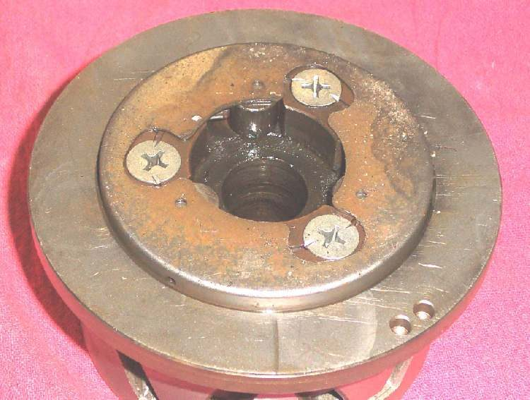
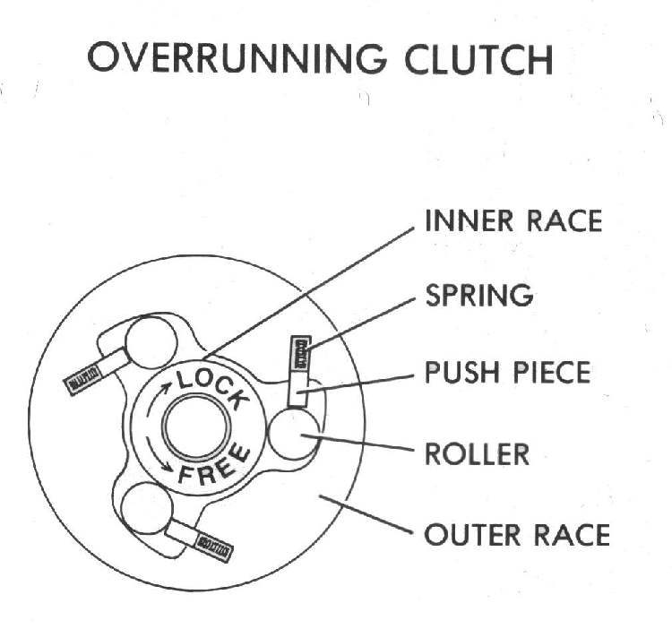

The starter clutch (also called a one-way or sprag clutch) lets the starter turn the engine but frees itself once the engine runs faster than the starter. It usually sits on the back of the flywheel. MAVCC calls it the most common electric-start fault: when the starter motor spins but the engine does not turn, the starter clutch is slipping. A starter clutch that sticks can also make a screech or grind after the engine starts.
Safety
- Key OFF, battery negative disconnected.
- The flywheel magnets are strong. Keep bolts, washers and fingers clear when you lift it off.
- Drain the oil if your engine's left cover holds oil.
What you can check at home
- Listen while pressing start. A fast whirr with no engine movement, or a short spin then a clunk, points to the starter clutch or its gears.
- Check that the battery is charged. A weak battery can make some clutches slip (K-Light 125 fault chart lists low battery power).
- If the starter was recently removed or rewired, check that it turns the right way. The K-Light 125 chart lists a reversed starter as a cause.
- On many engines you can remove the small starter gear cover and look at the reduction (idle) gears without removing the flywheel. Look for broken teeth.
What the workshop will do
- Remove the side cover, hold the flywheel and pull it with the correct puller. The starter driven gear and one-way clutch come off with it on the K-Light 125.
- Turn the driven gear by hand: it should turn freely one way and lock the other way. Free both ways or locked both ways means a faulty clutch.
- Inspect the rollers or sprags and their outer race for wear marks, flat spots and pitting. Inspect the driven gear hub where the rollers run.
- Measure the starter idle gear shaft and bush. K-Light 125 limits: idle gear bush inside diameter 8.3 mm; idle shaft outside diameter 7.94 mm.
- Replace the starter clutch as an assembly (MAVCC). Replace a worn driven gear at the same time.
- Refit with the correct fastener torques. K-Light 125: starter one-way clutch mounting bolts 95 N·m; starter clutch cover bolt 12 N·m. The flywheel nut value differs between pages of the K-Light manual, so ask the workshop to confirm it for your engine.
Ask for: the cause (worn rollers, broken spring, damaged gear), and whether the flywheel key and magnets were checked.
Check your work
- The engine cranks at once every time you press start.
- No screech or grind once the engine is running.
If it did not fix the problem
- Grinding continues: check the starter motor gear and the idle gear teeth. See Remove and inspect the starter motor.
Reference values (K-Light 125)
| Item | Value | PDF page |
|---|---|---|
| Starter idle gear bush ID, limit | 8.3 mm | 91 |
| Starter idle shaft OD, limit | 7.94 mm | 91 |
| Starter one-way clutch mounting bolt | 95 N·m | 73 |
| Starter clutch cover bolt | 12 N·m | 73, 91 |